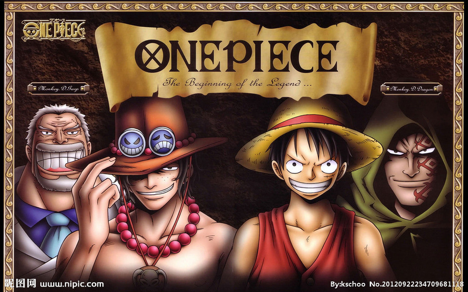

《航海王》是日本漫画家尾田荣一郎作画的少年漫画作品，在《周刊少年Jump》1997年34号开始连载。改编的电视动画《航海王》于1999年10月20日起在富士电视台首播。
《航海王》是日本漫画家尾田荣一郎作画的少年漫画作品，在《周刊少年Jump》1997年34号开始连载。改编的电视动画《航海王》于1999年10月20日起在富士电视台首播。2012年5月11日，《航海王》获得第41回日本漫画家协会赏。截至2015年6月15日，《航海王》以日本本土累计发行了3亿2086万6000本，被吉尼斯世界纪录官方认证为“世界上发行量最高的单一作者创作的系列漫画” 。2017年7月21日，日本纪念日协会通过认证，将每年的7月22日设立为“ONE PIECE纪念日。
《航海王》是日本漫画家尾田荣一郎作画的少年漫画作品，在《周刊少年Jump》1997年34号开始连载。改编的电视动画《航海王》于1999年10月20日起在富士电视台首播。
2012年5月11日，《航海王》获得第41回日本漫画家协会赏。截至2015年6月15日，《航海王》以日本本土累计发行了3亿2086万6000本，被吉尼斯世界纪录官方认证为“世界上发行量最高的单一作者创作的系列漫画” 。2017年7月21日，日本纪念日协会通过认证，将每年的7月22日设立为“ONE PIECE纪念日。

D之一族是超人气动漫《海贼王》中存在的种族之一。虽然人数很少，但奇怪的是，每一个活在世上的“D”之一族的人，无不是厉害的人物，是令海贼王世界里全世界都不敢小看的种族，更是被称为“神的天敌”。而且，在海贼王世界里“D”更是某种精神和意志的体现,由此产生了“D”之意志的传承。每一个“D”一族人都背负着不为人知的使命。“D”究竟是“Dream（梦想）”还是“Destiny（命运）。
D”被作为几名角色的中间名或隐名使用，如主角 蒙奇·D·路飞、海贼王 哥尔·D·罗杰、 波特卡斯·D·艾斯、 波特卡斯·D·露玖、 马歇尔·D·蒂奇、 哈古瓦尔·D·萨龙、 蒙奇·D·卡普、 蒙奇·D·龙、 特拉法尔加·D·瓦铁尔·罗等。根据故事线索，这个字母“D”并非单纯只是一个无聊的字母，而应该是某种精神和意志的体现，也有可能是在“消失的100年”中被毁灭的某个国家的血统的证明。证据就是所有名字中有D的人都非常厉害。最早朵丽儿医娘曾说过：“原来D的意志者还存在啊！我家驯鹿好像跟了个了不起的人物。”后来雷利也提到了，BIG MOM对D也有所反应，克拉松故乡（圣地玛丽乔亚）的人们更是将D之一族称为“神的天敌”……
白胡子也曾说过：“就像有继承罗杰意志的人出现一样，迟早会出现有继承艾斯意志的人出现！就算血缘被斩断，他们的火焰也不会熄灭。就是这样从很久以前一脉相承，传诵至今的。并且在将来的某一天——还会出现背负这几百年全部历史的，向这个世界挑战的人。战国……你们世界政府，一直在惧怕着有那么一天会到来，一个把整个世界卷入其中的巨大战役。虽然我没兴趣，但那个宝藏有朝一日被发现时……世界将被颠覆。总会有人找到的，那一天一定会来到。one piece是真实存在的！”